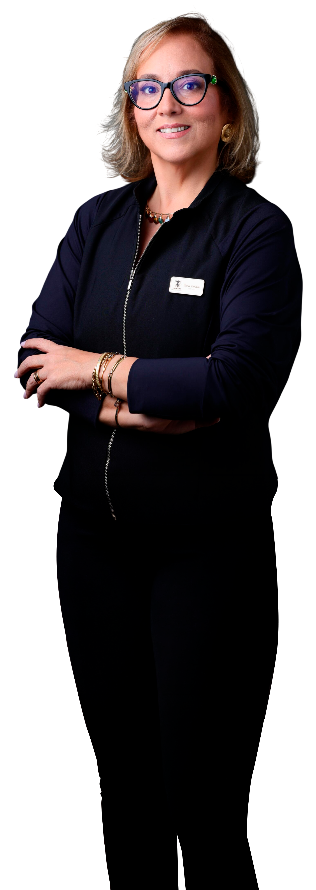

Medicina e Saúde · Salvador, BA
Medicina que escuta, entende e trata você por inteiro. Atendimento conduzido com escuta qualificada, avaliação clínica cuidadosa e acompanhamento próximo, respeitando o que cada paciente precisa.

Cada caso é avaliado com base na história de saúde, nos exames e nas queixas do paciente, sem atalhos.
O atendimento vai além da prescrição: há tempo para ouvir, esclarecer e acompanhar cada etapa do cuidado.
As decisões clínicas são tomadas de forma responsável, com avaliação cuidadosa e respeito às particularidades de cada caso.
Sobre mim
A Dra. Rosa Landim é médica com CRM-BA 45061. Seu atendimento é conduzido com escuta qualificada, avaliação clínica cuidadosa e acompanhamento próximo em cada etapa do cuidado.
Acredita que uma boa prática médica começa pela compreensão do contexto de cada paciente, e que as melhores condutas surgem dessa atenção.
Oferecer um cuidado médico baseado em critério, escuta e responsabilidade clínica.
Conduzir o atendimento com atenção humana e rigor técnico, respeitando as necessidades individuais de cada paciente.
Emagrecimento
O processo de emagrecimento tem causas e contextos diferentes para cada pessoa. O atendimento é conduzido com avaliação clínica, análise de exames e definição de condutas compatíveis com o histórico e as necessidades de cada paciente.
Outros tratamentos
Acompanhamento médico para pacientes com diabetes, hipertensão, obesidade e outras condições que exigem avaliação contínua e condutas adaptadas à evolução de cada caso.
Suplementação intravenosa e intramuscular com vitaminas, aminoácidos e antioxidantes para fortalecer o organismo e acelerar a recuperação celular.
Avaliação e acompanhamento médico com definição de condutas conforme as características e necessidades de cada paciente.
Vitaminas e minerais indicados após avaliação médica e análise de exames, quando houver necessidade clínica identificada.
Saiba mais
O diferencial está na forma como o atendimento é conduzido: com tempo para ouvir, critério para avaliar e presença para acompanhar.
O atendimento considera o contexto de cada paciente, não apenas os sintomas isolados.
As condutas são definidas com base em avaliação cuidadosa e acompanhamento próximo.
A abordagem integra diferentes perspectivas do cuidado, sempre ancorada em critério médico.
Da consulta ao acompanhamento, o paciente tem um cuidado contínuo e acessível.
Agende uma consulta e receba um atendimento médico com escuta, avaliação clínica e acompanhamento próximo.
Agendar Consulta